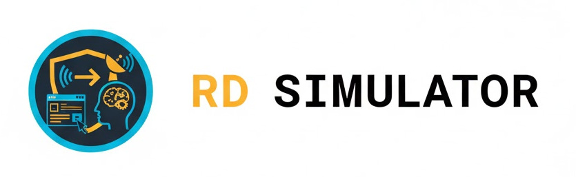
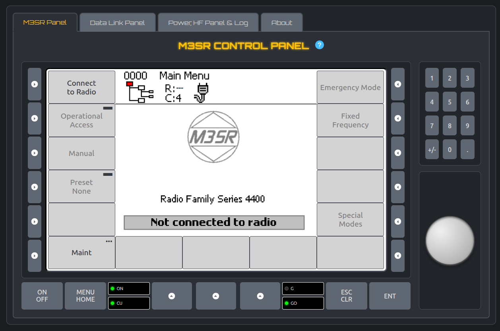
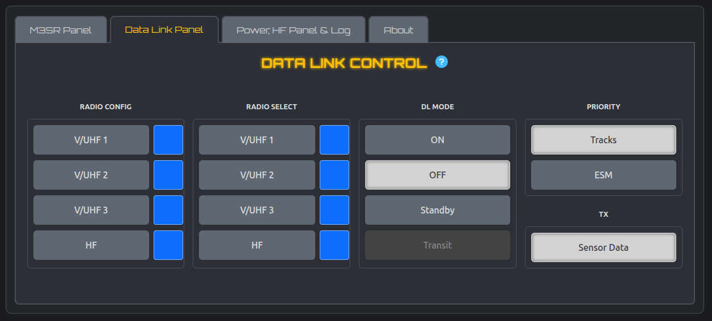
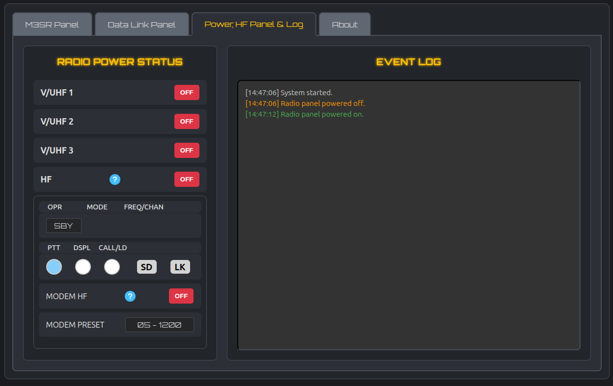

Radio & Data Link Simulator
Sistema de treinamento de operadores através da simulação de configuração de rádios e comunicações de dados.
O projeto consiste em um simulador para um painel de controle de rádio M3SR, um painel de controle simplificado de rádio HF e um painel de controle de Data Link associado.
A aplicação, desenvolvida em uma única página web, visa replicar as funcionalidades, os fluxos operacionais e a interface visual dos equipamentos reais, permitindo treinamento e familiarização dos operadores.
Interface interativa com display, botões físicos e digitais (softkeys), teclado numérico e knob para configuração de rádios.
Permite configurar, selecionar e ativar o enlace de dados através dos rádios disponíveis, simulando modos de operação, como os de transição e espera.
Gerenciamento de estado físico (ON/OFF) e log de eventos em tempo real, registrando ações do usuário e eventos do sistema.

Painel de configuração e operação remota dos rádios.
Todos os sistemas operam de forma integrada. Para estabelecer o link de dados, o respectivo rádio deve estar ligado, configurado corretamente e sincronizado.
O sistema gera, de forma aleatória e configurável, a ocorrência de falhas na rede de dados, simulando panes em elementos da estrutura de comunicações.

Painel de configuração e operação do Data Link.

Monitoramento de status e logs de eventos do sistema.